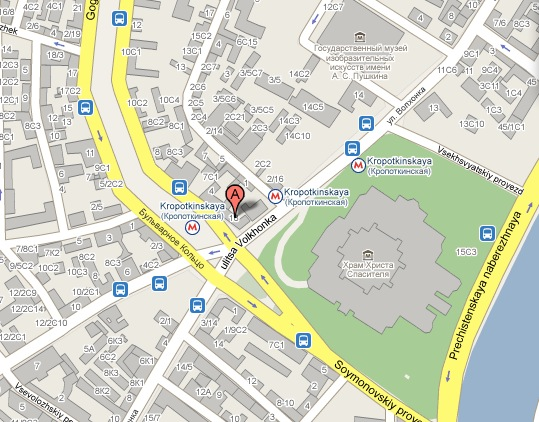
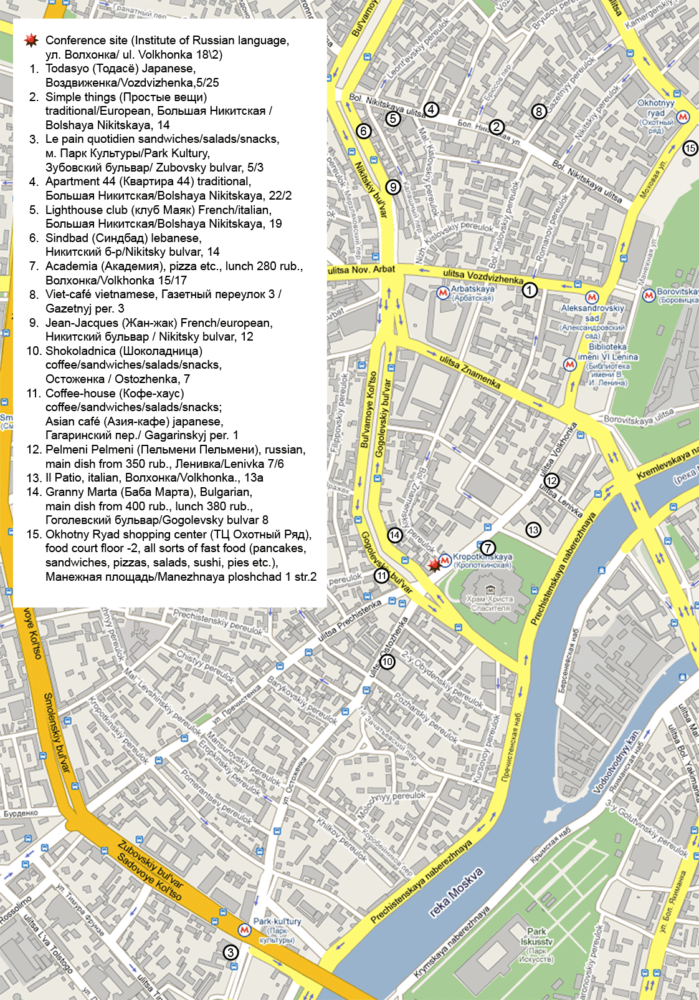

|
|
How to get to
the conference site?
If you take the underground to get to the Institute, it is better to
use the
exit closest to the last coach when going from Park
Kul'tury / Парк Культуры (inbound direction)
or to the first coach when going form Biblioteka imeni Lenina /
Библиотека имени Ленина (outbound
direction). You'll find yourself on the Gogolevskij bul'var
(Гоголевский бульвар). Turn left,
cross the street, turn right round the
corner. You are in front of the building you need, the entrance will be
only a few
steps further.
MOSS takes place in the big conference hall of the Institute which is
situated on the first floor (=one floor above the ground floor.) There
will be arrows inside showing the way from the entrance.
|
|
On the map below, circled M-s are the subway exits ("M" from Russian met"ro,
meaning `subway'), and a google pointer with A is the Institute's
building:

The official street address is
Volkhonka street 18/2.
Entrance to the building is free, so you need no special documents to
attend the
conference, but you might be asked to show your passport. (And it is in
general advisable to carry your passport with you while in Moscow.)
And here is a map of what we think might be a nice place to have a
lunch:

|